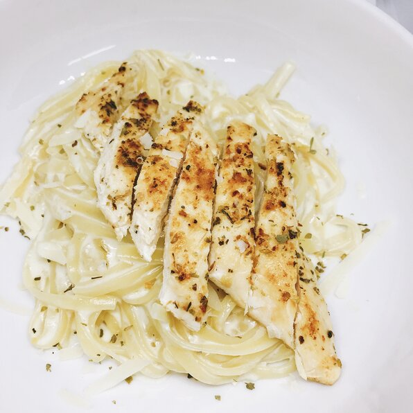

Chicken Alfredo

Description
Olive Garden, you don't stand a chance.
Ingredients
- 1/2 pound skinless, boneless chicken breast
- 1/2 teaspoon garlic salt
- 1/2 teaspoon italian seasoning
- 1 tablespoon olive oil
- 2 cups milk
- 1 large clove garlic, minced
- 8 oz fettucine, broken in half
- 1/2 cup heavy whipping cream
- 3/4 cup freshly grated Parmesan cheese, plus more for serving
Directions
- Slice each chicken breast horizontally into 3 thinner pieces using a sharp knife. Sprinkle each chicken
piece with garlic salt and Italian seasoning on both sides.
- Heat olive oil in a large skillet over medium-high heat. Add chicken and cook until golden and cooked
through, about 2 minutes per side. Remove onto a plate.
- Add milk and garlic to the skillet. Bring to a simmer and add fettuccine. Cook, stirring every 30 seconds to
prevent sticking until pasta has softened, about 3 minutes. Reduce heat to medium and cook, stirring every
couple of minutes, 6 to 7 minutes more. Stir in cream and Parmesan cheese. Simmer, stirring occasionally,
until sauce has thickened and pasta is cooked, about 2 more minutes.
- Serve immediately and garnish with additional Parmesan cheese if desired.